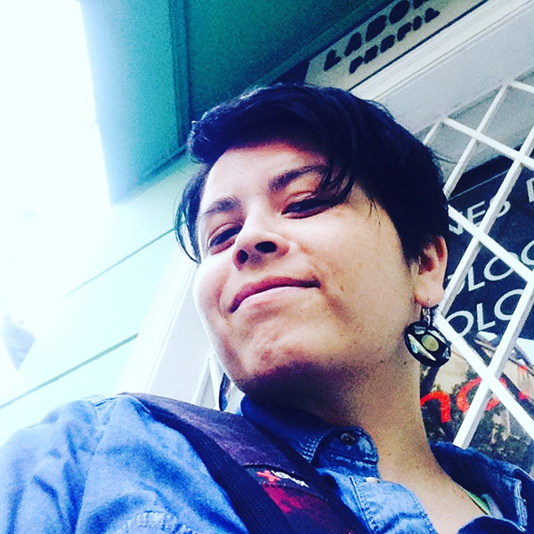
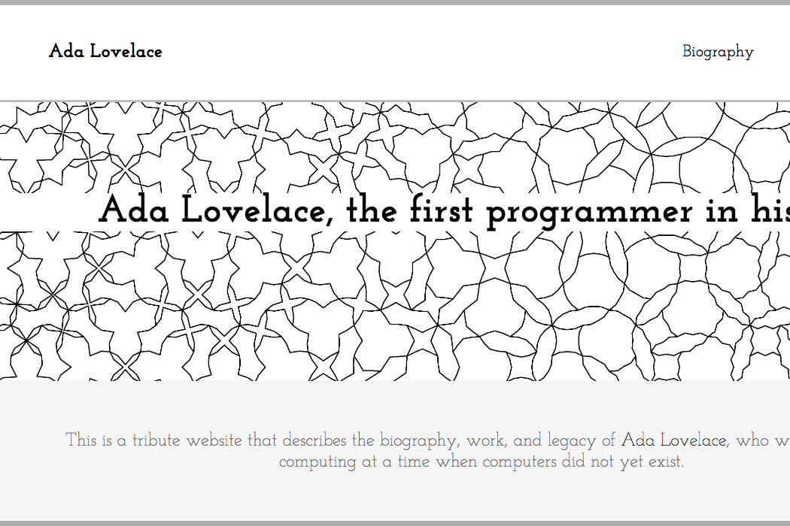

Sitio web Ada Lovelace
Este sitio web es un página tributo a Ada Lovelace, realizado como ejercicio para "Free Code Camp"
Diseñadora UI/UX | Diseñadora web | Ilustradora
Más acerca de miNOMBRE: Natalia Constanza Cancino Rojas
PROFESIÓN: Diseñador UI / UX, Diseñador web, e Ilustrador
Mis habilidades van desde el conocimiento gráfico, editorial y de ilustración pasando por HTML5,CSS3,frameworks CSS, Javascript, ES6, React, Redux y por el lado del Diseño UX, habilidades de User research y capacidad para prototipar MVP de alta fidelidad como UI.
Sitio web Ada Lovelace
Este sitio web es un página tributo a Ada Lovelace, realizado como ejercicio para "Free Code Camp"
Sitio web
Este trabajo fue realizado para la empresa de Fabricación y Montaje en acero Cecor, para la cual se creo su sitio web corporativo
Ilustraciones Cloudbreak
Serie de ilustraciones para una serie estampados de poleras para la marca Cloudbreak
Safe Travel
Este proyecto realizado durante el estudio en Laboratoria fue parte de los primeros retos realizados, y abordó la experiencia de viajar en bus dentro de Chile
Aplicación Sportykids
Se trata de un proyecto final realizado dentro de Laboratoria donde se aborda la problemática de la inactividad física en los niños pequeños
Vinay y Asociados
Se creo toda la imagen corporativa de la empresa de arquitectura Vinay y Asociados